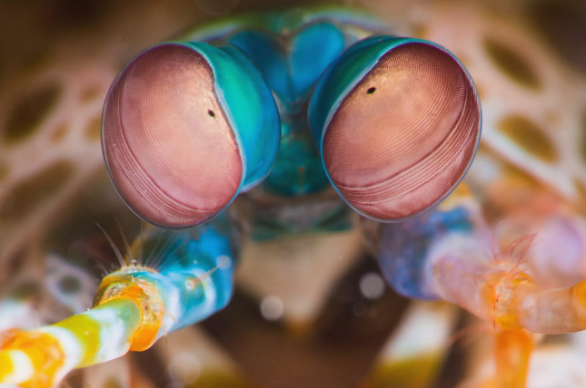

Stomatopoda
Description
Odontodactylus scyllarus Odontodactylus scyllarus Odontodactylus scyllarus Odontodactylus scyllarus Odontodactylus scyllarus Odontodactylus scyllarus Odontodactylus scyllarus Odontodactylus scyllarus Odontodactylus scyllarus Odontodactylus scyllarus Odontodactylus scyllarus Odontodactylus scyllarus Odontodactylus scyllarus Odontodactylus scyllarus Odontodactylus scyllarus Odontodactylus scyllarus
Odontodactylus scyllarus Odontodactylus scyllarus Odontodactylus scyllarus Odontodactylus scyllarus Odontodactylus scyllarus Odontodactylus scyllarus scyllarus Odontodactylus scyllarus
Visão
Stomatopods tem a visão mais completa do reino animal. Stomatopods tem a visão mais completa do reino animal. Stomatopods tem a visão mais completa do reino animal. Stomatopods tem a visão mais completa do reino animal. Stomatopods tem a visão mais completa do reino animal. Stomatopods tem a visão mais completa do reino animal. Stomatopods tem a visão mais completa do reino animal. Stomatopods tem a visão mais completa do reino animal. Stomatopods tem a visão mais completa do reino animal. Stomatopods tem a visão mais completa do reino animal.
